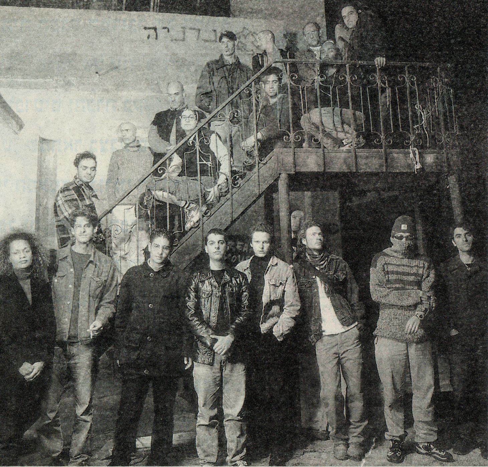
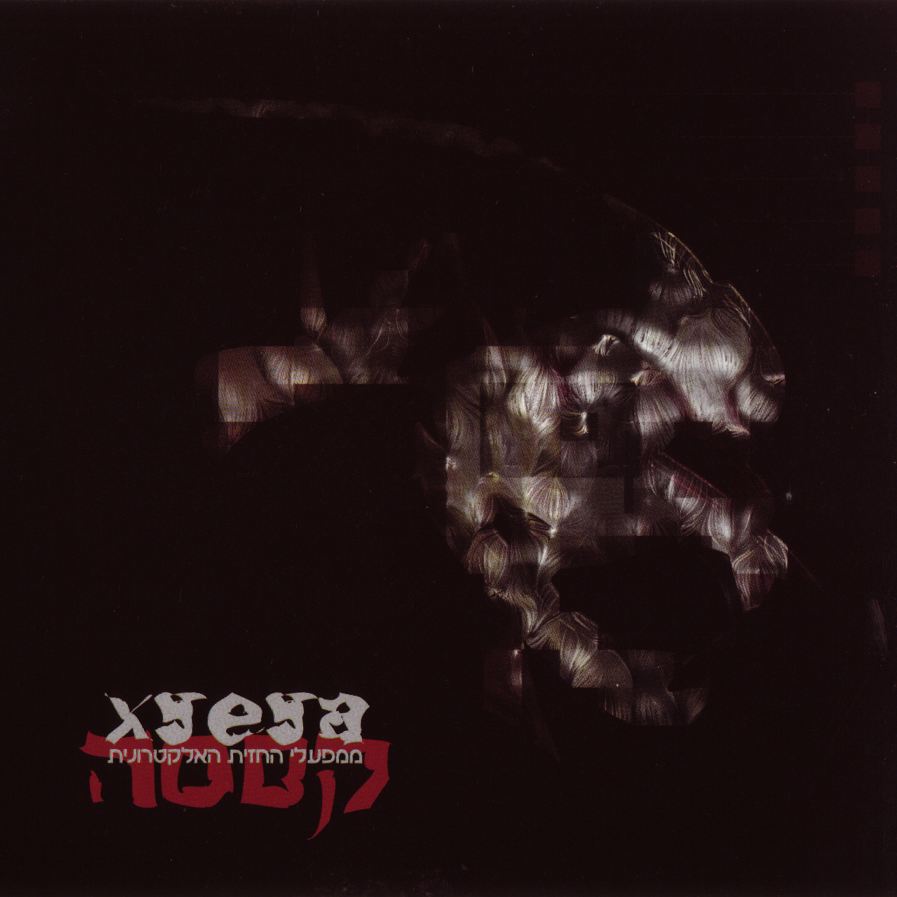
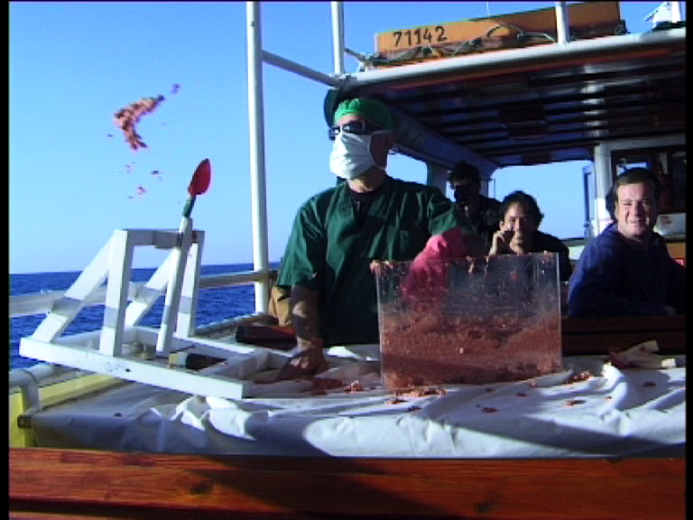

החזית האלקטרונית
אדם/קבוצה

החזית האלקטרונית היה קולקטיב מוזיקלי שערך הופעות ומסיבות סביב מוזיקה אלקטרונית. הוא הוקם ב־1996 על ידי יורם אליקים, בניה רכס, אביעד אלברט, יואב רטנר ומספר חברים נוספים, כשבהמשך הצטרפו אנשים נוספים ונוצר קולקטיב לא היררכי. השאיפה הייתה להקים לייבל אך בגלל שלא היו להם האמצעים לכך (צורבי דיסקים נהיו נפוצים מאוחר יותר, ועליהם התבססה הפעילות של לייבלים כדוגמת פאקט רקורדס) הסתפקו בקיום אירועי מוזיקה. הסגנון המוזיקלי באירועים אלה היה מגוון מפני שלא היו אנשים רבים שעסקו אז בארץ במוזיקה זו אז היה מקום לטווח רחב ואקלקטי של ז'אנרים.
החזית לא פעלה רק בירושלים אלא הפעילות התחלקה בערך שווה בשווה בין ירושלים ותל אביב, בתל אביב אף הייתה יותר פתיחות למה שעשו ומצאו יותר מקומות שהתעניינו בהם. עם זאת הגרעין המייסד היה ירושלמי ושמה המקורי היה "החזית האלקטונית לשחרור ירושלים", שם שנועד להישמע כמו ארגון מיליטנטי. בין המקומות שהופיעו בהם הייתה הצוללת הצהובה – שהייתה אז חדרי חזרות שהעירייה מימנה, ולא סוג המקום שהיו בו אירועים ומסיבות. בניה רכס ואלון אבנת היו אז בלהקה דיואלט שערכה שם חזרות. הם התחילו שם סדרת אירועים בשם "הך בראש", ומשה להב שניהל את המקום, ראה שיש קהל שמגיע והתלהב גם אם לא הבין בדיוק מה הם עושים ונתן להם לקיים אותם שם. מלבד הצוללת הופיעו בכמה מקומות בתלפיות, אך הרבה מהאירועים קרו בתל אביב לדוגמה בר "השריטה" וה"דינמו דבש", שם העריכו והתעניינו במה שעשו, בשונה מהצוללת או מועדונים בירושלים.
בנוסף לאירועים החזית ערכה והוציאה אלבום אוסף של אמנים שונים שהופיעו או שהיו קשורים אליהם בשם "קססה", שיצא ב־1998 בלייבל LA4. האוסף נערך במשך שנתיים והכיל אמנים כמו ישי אדר ויואב רנשטיין (בשם Two Tall Men), מלכיאל גרוסמן, רונן הופמן (לשעבר ב־DXM), Gaza – אלון אבנת ויאיא סיימון, גימל (להקה רטורית).

פלאייר ל"מסע ההלוויה" לחזית האלקטרונית, 1999

עטיפת אלבום האוסף "קססה", 1998

זריקת בשר לים במסיבת ההלוויה על הספינה סבבה 5
בדצמבר 1999 החליטו לסגור את פעילות החזית מפני שלא הייתה היררכיה והיה קשה להחזיק בצורה זאת את אותה אנרגיה של פעילות לאורך זמן. הם קיימו מסיבת סגירה בהפקת גיא בכר (השותף של שרון אייל, מלהקת המחול לב), על ספינה קטנה במנל יפו בשם ״סבבה 5״. לספינה היו שתי קומות, כשלמטה היו תקלוט של נדב רביד, והופעה של אביעד אלברט, בניה רכס ואורי סוכרי. המסיבה נפכה לאירוע מיתולוגי בעקבות כמה מקרים, ביניהם זריקת בשר נא לים כדי למשוך כרישים, ושימוש רב בסמים, ביניהם GHB, כשאחד האנשים לקח מנה גדולה מדי ואיבד את הכרתו. בשלב זה הספינה חזרה לחוף והזעיקו אמבולנס, אך מארגני המסיבה חששו מאוד כי הסתובבו שם הרבה סמים. זה היה האירוע שזיכה אותם בכיסוי העיתונאי הרב ביותר בשנות פעילותם, כשכתבת של עיתון תל אביב הגיעה לשם וסיקרה את האירועים בדרמטיות כדי לעורר סנסציה. התפרסמו מספר כתבות, ביניהן כתבה בערוץ 1 שהציגה וידיאו מהמסיבה.
מפירוק החזית קמו מספר פרוייקטים, ביניהם טפט ופאקט רקורדס.